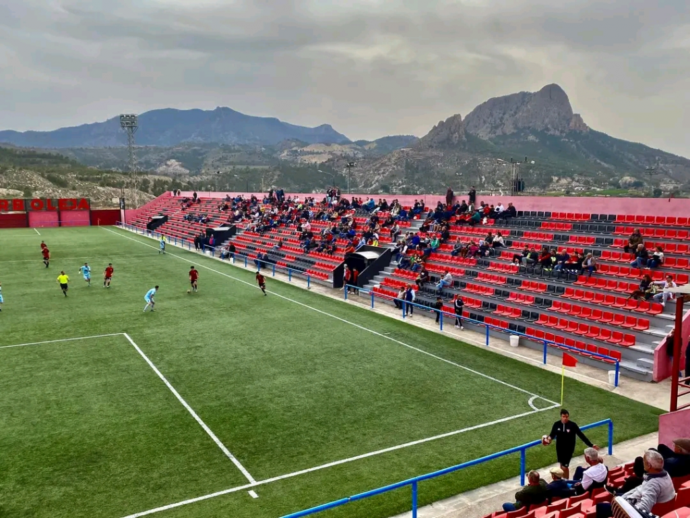
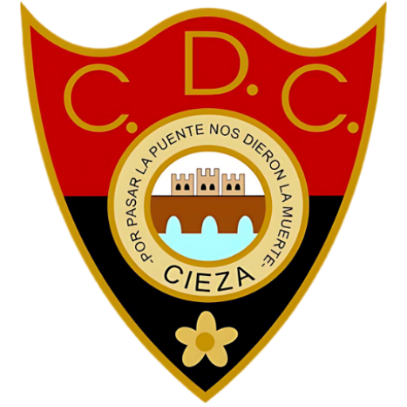
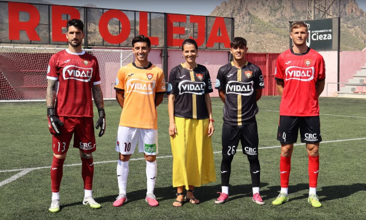
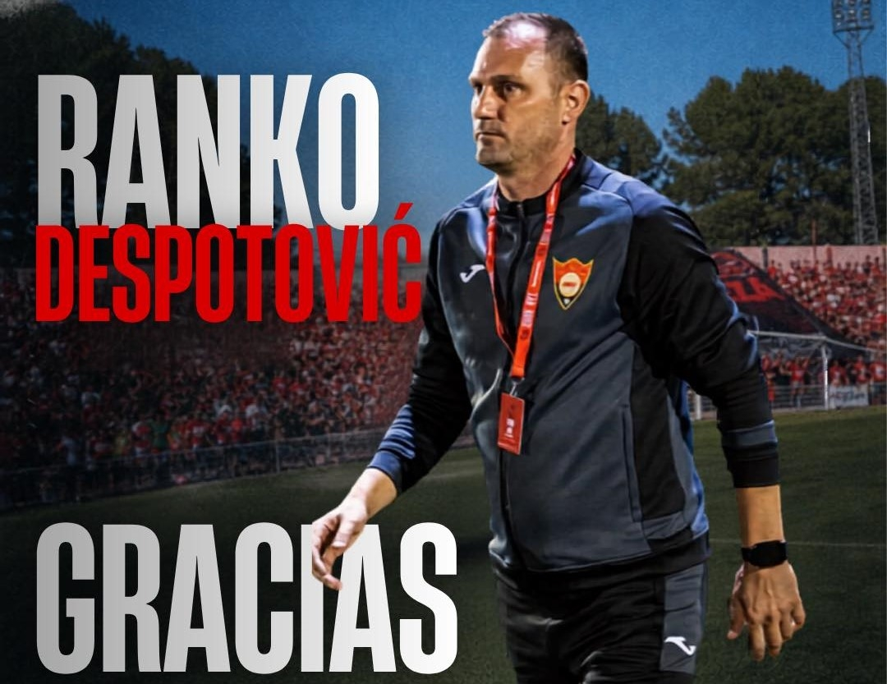
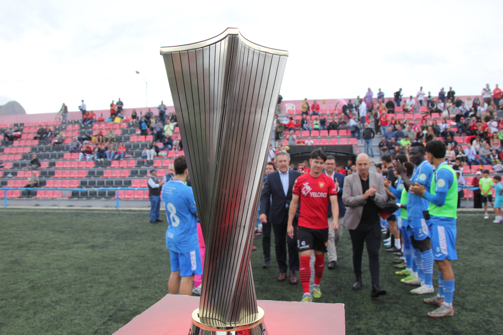

El club nació en 1923

Camiseta granate
Pantalón negro
Antonio Díaz
Segunda Federación
Grupo 3

- 1987 a Segunda B
- 1993 a Segunda B
- 2026 a Segunda Federación
Campeón de Tercera Federación 2025/26


Bernard Haslip Brunton, ingeniero inglés que vivía en Cieza en 1923.